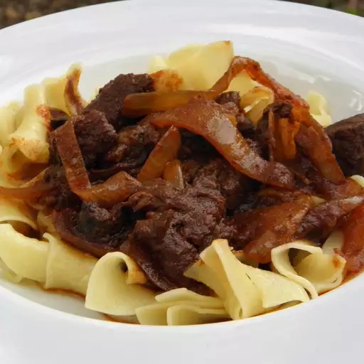

Real Hungarian Goulash

Description
It's hard to find a real Hungarian recipe for goulash. This is the real thing.
Real goulash has no tomato paste or beans. Eat with a slice of rustic bread.
Dip bread in sauce and clean the plate with the bread at the end. Can be eaten with spaetzle.
Ingredients
- 2 tablespoons lard
- 2 large onions, finely sliced
- 2 pounds beef chuck, cut into 1-inch cubes
- 2 tablespoons Hungarian paprika
- 1 cup water, or as needed
- salt and ground black pepper to taste
Directions
- Melt lard in a large pot over medium heat. Cook and stir onions in hot lard until soft and translucent, 5 to 8 minutes.
- Stir beef and paprika into onions. Reduce heat to low and simmer for 1 hour, stirring occasionally. Add 1 cup water and simmer, adding more water if moisture gets too low, until meat falls apart and onion sauce is thick, about 1 hour more. Season with salt and pepper to taste.
Enojoy!